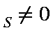

In the RHF formalism a MECI calculation is performed. In general, ESR can be used for any system for which M. If the C.I. calculation results in many states, then the spin density for the state requested and the next few states will be printed. For example, if benzene cation, D6h, is calculated, using ESR OPEN(3,2), then the spin density for the two degenerate components of E1g will be printed. For this system, the total spin density on any given atomic orbital or any atom is given by the average of the spin densities for the two components. For benzene+, this would be 1/6 electrons.
Thus, for example, for ethylene, ESR TRIPLET C.I.=2 would give meaningful results, as would ESR MS=1 C.I.=2. However, ESR ROOT=2 C.I.=2 would not, as this would be used to calculate the spin density arising from the MS = 0component of a triplet state, which will have a zero spin density.
Spin density for state Ψj, calculated as spin, SA, on atom A, is given in terms of contributions from the M.O.s of the active space ψi, ψi = Σλiφ as:
SA = ΣλAφλi2ΣiSi,
where the Si are the contributions of spin from each M.O., expressed as a sum over the microstates of the C.I., Ψj = ΣckjΨj, :
Si = Σk(Oiαk-Oiβk)ckj,
Where Oiαj
is the alpha or "spin up" occupancy of M.O. ψi,
in microstate Ψj.
Although φλi2
is obligate positive, Si
can be positive or negative, therefore SA can be positive or
negative, although it is unlikely to be very negative, and the sum over all
atoms must equal 2MS(Z)
If the keywords OPEN and C.I.= are both
absent, then only a single state is
calculated. The spin density is then calculated from the state
function. In order to have spin density on the hydrogens in,
for example, the phenoxy radical, several states should be mixed.